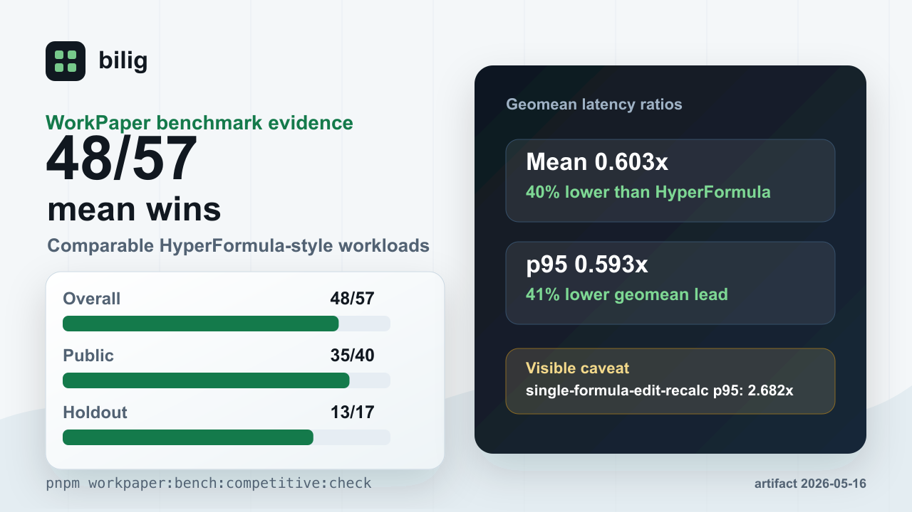

Why it exists
Spreadsheets become product code all the time.
Pricing plans, ARR forecasts, quote checks, and import validation are usually spreadsheet-shaped. bilig lets that logic run where the product already runs.
Build from the data you already have.
Arrays and JSON records become sheets. Formulas stay formulas.
Edit the inputs you mean to change.
Change a cell through the API, not a screenshot or a hidden browser session.
Ask for the calculated result.
Read the dependent cell after recalculation and return the value you actually checked.
Save the workbook.
Persist a WorkPaper document as JSON, then restore it in the next request, job, or tool call.
Try it
One TypeScript file. One edit. One restored total.
The example changes West customers from 20 to 32. Total revenue moves from 36,900 to 51,300 after the saved document is restored.
Setup
mkdir bilig-headless-eval
cd bilig-headless-eval
npm init -y
npm pkg set type=module
npm install @bilig/headless
npm install -D tsx typescript @types/node
npx tsx eval.tsMore examples live in examples/headless-workpaper and examples/serverless-workpaper-api.
import {
WorkPaper,
createWorkPaperFromDocument,
exportWorkPaperDocument,
parseWorkPaperDocument,
serializeWorkPaperDocument,
} from "@bilig/headless";
type NumericCell = { value: number };
const workbook = WorkPaper.buildFromSheets({
Revenue: [
["Region", "Customers", "ARPA", "Revenue"],
["West", 20, 1200, "=B2*C2"],
["East", 30, 250, "=B3*C3"],
["Central", 18, 300, "=B4*C4"],
],
Summary: [
["Metric", "Value"],
["Total revenue", "=SUM(Revenue!D2:D4)"],
],
});
function numberValue(cell: unknown): number {
if (typeof cell === "object" && cell !== null && typeof (cell as NumericCell).value === "number") {
return (cell as NumericCell).value;
}
throw new Error(`Expected numeric cell value, got ${JSON.stringify(cell)}`);
}
const summary = workbook.getSheetId("Summary");
const revenue = workbook.getSheetId("Revenue");
if (summary === undefined || revenue === undefined) {
throw new Error("Missing sheet");
}
const before = numberValue(workbook.getCellValue({ sheet: summary, row: 1, col: 1 }));
workbook.setCellContents({ sheet: revenue, row: 1, col: 1 }, 32);
const saved = serializeWorkPaperDocument(exportWorkPaperDocument(workbook, { includeConfig: true }));
const restored = createWorkPaperFromDocument(parseWorkPaperDocument(saved));
const restoredSummary = restored.getSheetId("Summary");
if (restoredSummary === undefined) {
throw new Error("Missing restored Summary sheet");
}
const after = numberValue(restored.getCellValue({ sheet: restoredSummary, row: 1, col: 1 }));
console.log({ before, after, bytes: saved.length, verified: before === 36900 && after === 51300 });Services and tools
Use the same workbook behind HTTP or MCP.
Keep the workbook code small and boring. Wrap it with HTTP, serverless, Vercel AI SDK, LangChain, or MCP when you need a transport.
$ npm exec --package @bilig/headless -- bilig-workpaper-mcp
ok tools/list
ok tools/call read_workpaper_summary
ok tools/call set_workpaper_input_cell
ok formulas persisted after restoreProof
No trust-me homepage claims.
Benchmarks, caveats, compatibility gaps, starter issues, and feedback threads are public. Read those before you depend on the package.

Choose
Start with the thing you need to ship.
If you are comparing engines, wiring a service, or checking Excel compatibility, start here.
Docs
Find the shortest path.
Runnable examples, service guides, comparisons, and small first issues.